Can the core actually be seen?
The webcam at Lopstick was plate-solved from its own stars: bearing 178.5° ,
94° wide, pitched 3° below level. Every target of this trip falls inside that frame —
the Milky Way core, Rho Ophiuchi, M8 and M20 — at the same low southern altitudes you
will be shooting them at, from 16.6 km away.
So this is not a cloud proxy. A star either shows through or it does not. It also covers
the case the satellite handles worst: infrared struggles with low cloud whose tops sit near
ground temperature, and low cloud is exactly what blocks a target at 16°.
4stars in the core region · Thu 22:00
Flux 4,158 · brightest source
36× the noise · core at
14.7° altitude
One bar per capture, height is light collected in the core region.
Click a bar to jump to that frame.
Why flux and not just a count
A star count depends on where the detection threshold lands, and the stack noise moves
between captures. Two grabs two minutes apart gave 15 sources and then 5 — not because the
sky changed, but because σ went from 0.78 to 0.88 and the 6σ cut moved with it. Flux is the
total light collected and does not care where a threshold sits, so it is the number to
compare across captures and across nights.
● core region
● Rho Ophiuchi
● teapot
● detected source
How well is the camera pointed?
The star counts depend on a plate solve — bearing 178.5°, 94° wide, pitched 3° below
level — and every number here rests on it, so it is worth showing rather than asserting.
Measured against catalogue positions across every capture:
Confident matches — stars brighter than magnitude 2.95, where the
pairing is unambiguous — sit at 26 px mean error, about
1.7° at this plate scale. Fainter stars show larger residuals, but those are almost
certainly mispairings rather than a bad solve: at an 80 px search radius a faint catalogue
star will find something . Error does not grow toward the frame edge
(correlation −0.71), so this is not lens distortion.
A 26 px pointing error is about a fifth of the 220 px aperture
radius. Flux is unaffected; naming an individual star is not, which is why the headline
number is flux and the star count is shown as supporting detail.
The frames
Each is a median stack of the 30 least-compressed frames from a 30-second grab at 1080p,
stretched so faint stars are visible, masked to sky only. Newest first.
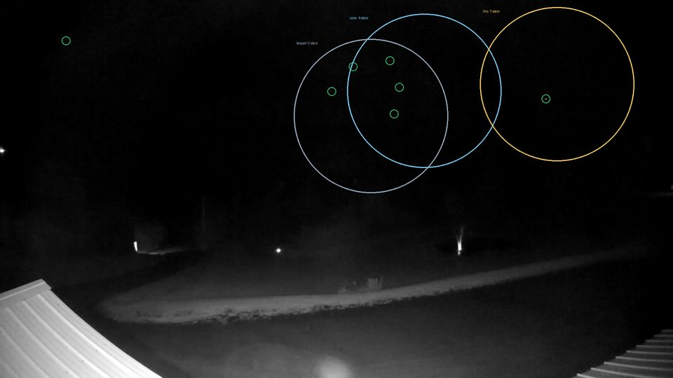
Thu 13 Aug · 22:00 core 4 stars · flux 4,158 · peak 36× · alt 14.7°rho 1 stars · flux 2,733 · peak 142×teapot 5 stars · flux 4,93330 of 60 frames stacked · noise σ 0.97 · 7 sources in sky 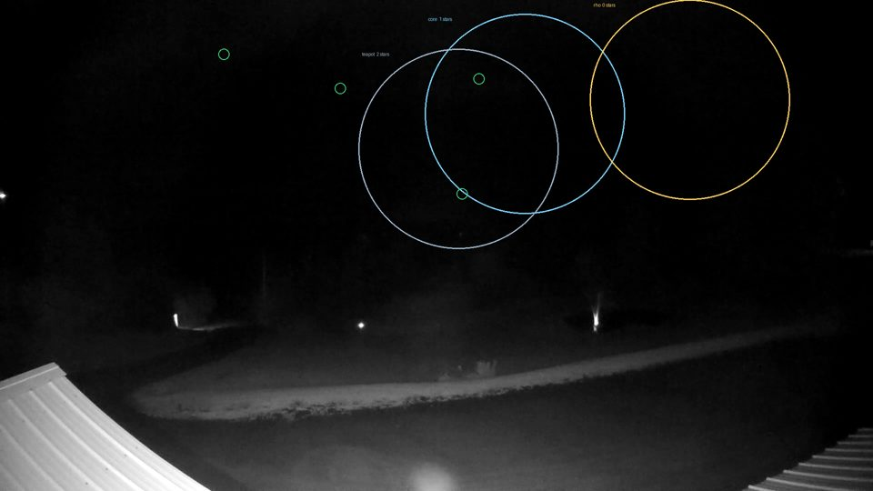
Thu 13 Aug · 21:45 core 1 stars · flux 2,696 · peak 7× · alt 15.2°rho 0 stars · flux 1,209 · peak 6×teapot 2 stars · flux 3,00630 of 60 frames stacked · noise σ 0.99 · 4 sources in sky 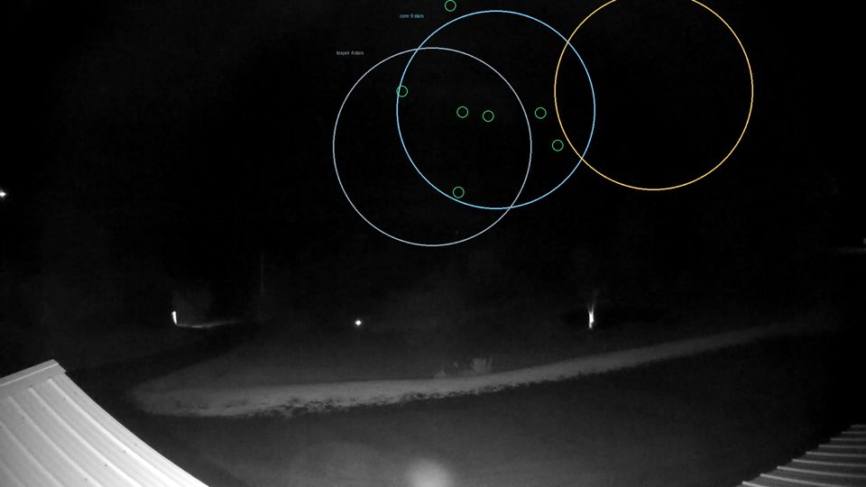
Thu 13 Aug · 21:30 core 6 stars · flux 3,081 · peak 26× · alt 15.6°rho 0 stars · flux 1,663 · peak 5×teapot 4 stars · flux 2,43130 of 60 frames stacked · noise σ 0.98 · 7 sources in sky 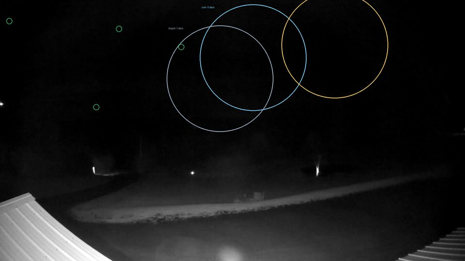
Thu 13 Aug · 21:15 core 0 stars · flux 2,025 · peak 8× · alt 15.8°rho 0 stars · flux 1,323 · peak 8×teapot 1 stars · flux 1,66630 of 60 frames stacked · noise σ 0.96 · 4 sources in sky 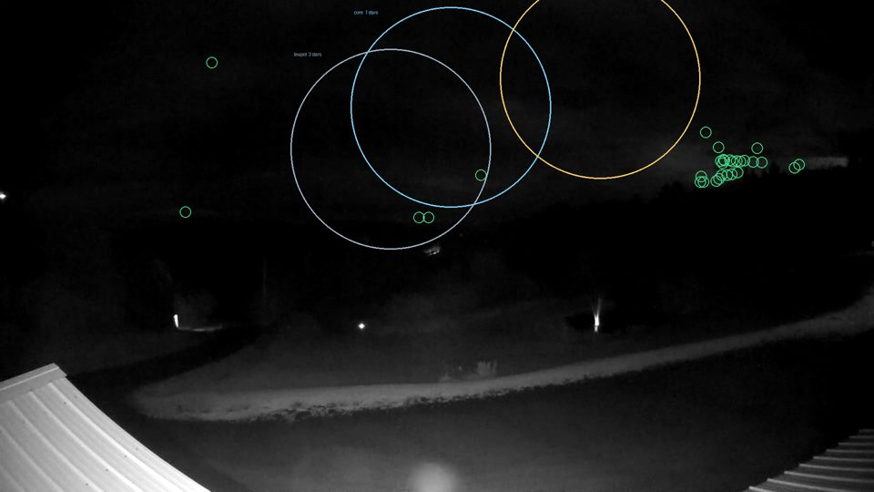
Thu 13 Aug · 21:00 core 1 stars · flux 7,073 · peak 9× · alt 15.9°rho 0 stars · flux 3,450 · peak 6×teapot 3 stars · flux 4,56230 of 60 frames stacked · noise σ 1.14 · 35 sources in sky 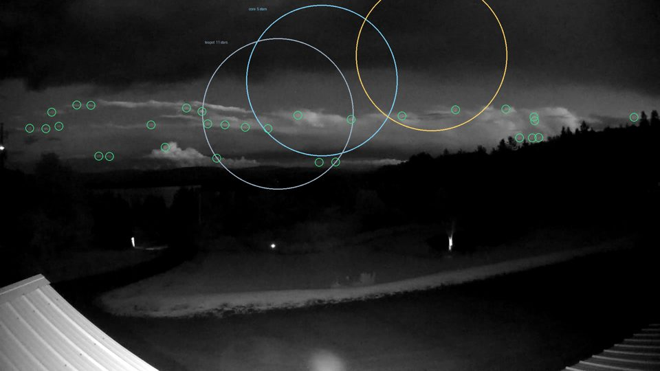
Thu 13 Aug · 20:45 core 5 stars · flux 76,433 · peak 16× · alt 15.8°rho 3 stars · flux 33,895 · peak 22×teapot 11 stars · flux 148,78830 of 60 frames stacked · noise σ 2.05 · 40 sources in sky 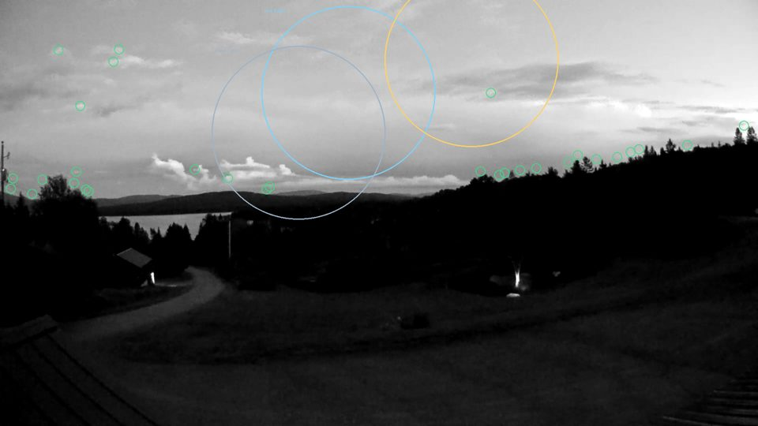
Thu 13 Aug · 20:30 core 0 stars · flux 9,398 · peak 12× · alt 15.5°rho 2 stars · flux 40,663 · peak 14×teapot 5 stars · flux 144,02330 of 60 frames stacked · noise σ 1.77 · 40 sources in sky 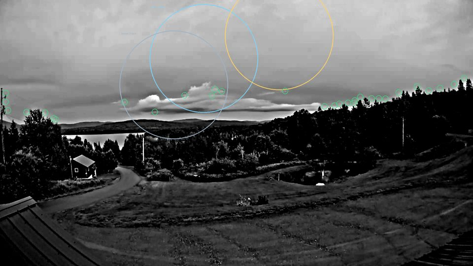
Thu 13 Aug · 20:15 core 7 stars · flux 72,008 · peak 39× · alt 15.1°rho 0 stars · flux 3,781 · peak 6×teapot 9 stars · flux 165,60330 of 60 frames stacked · noise σ 0.93 · 40 sources in sky 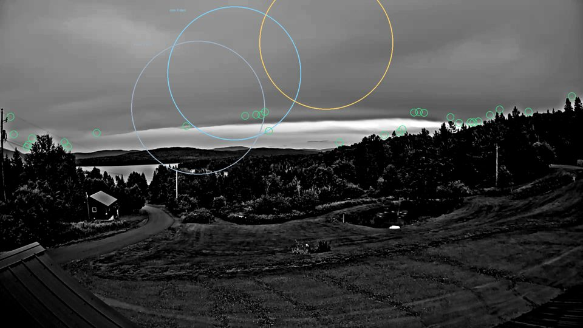
Thu 13 Aug · 20:00 core 6 stars · flux 102,558 · peak 56× · alt 14.5°rho 0 stars · flux 720 · peak 5×teapot 6 stars · flux 149,74330 of 60 frames stacked · noise σ 0.76 · 34 sources in sky 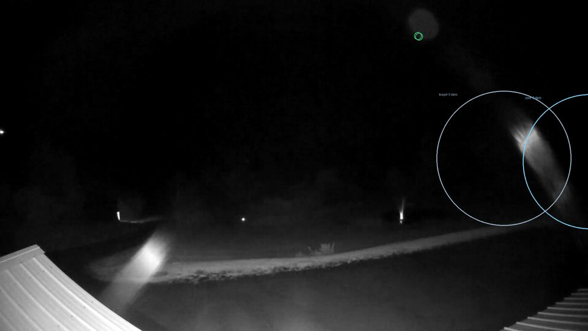
Thu 13 Aug · 00:45 core 0 stars · flux 4 · peak 3× · alt 0.7°rho 0 stars · flux 0 · peak 0×teapot 0 stars · flux 7130 of 60 frames stacked · noise σ 0.91 · 2 sources in sky 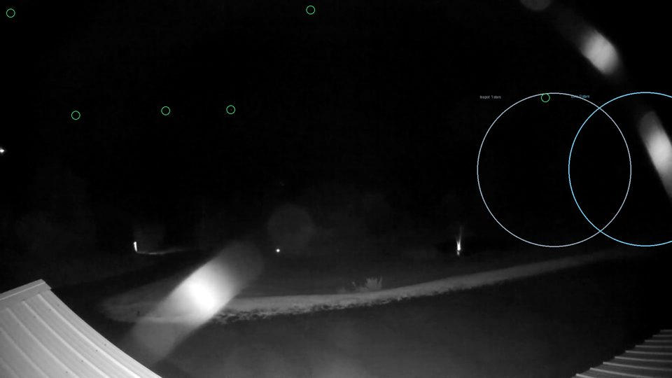
Thu 13 Aug · 00:30 core 0 stars · flux 1,904 · peak 12× · alt 2.6°rho 0 stars · flux 0 · peak 0×teapot 1 stars · flux 16430 of 60 frames stacked · noise σ 0.79 · 6 sources in sky 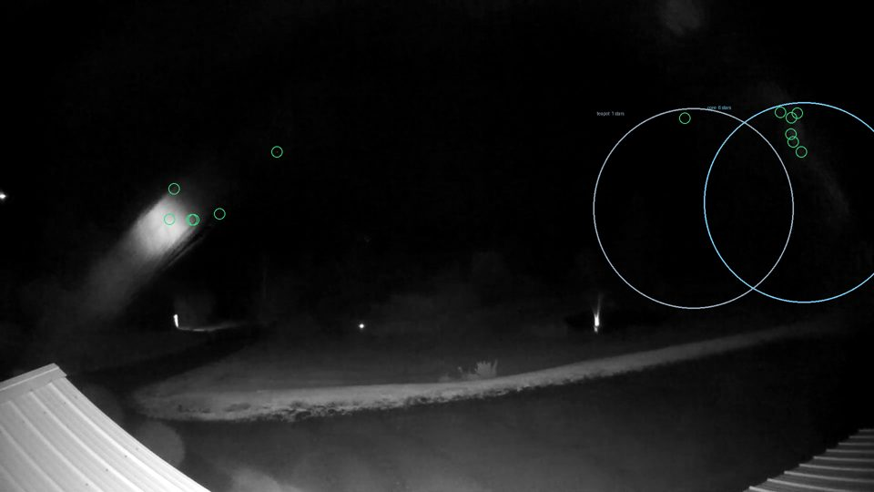
Thu 13 Aug · 00:15 core 6 stars · flux 3,252 · peak 10× · alt 4.3°rho 0 stars · flux 0 · peak 0×teapot 1 stars · flux 67530 of 60 frames stacked · noise σ 0.87 · 13 sources in sky 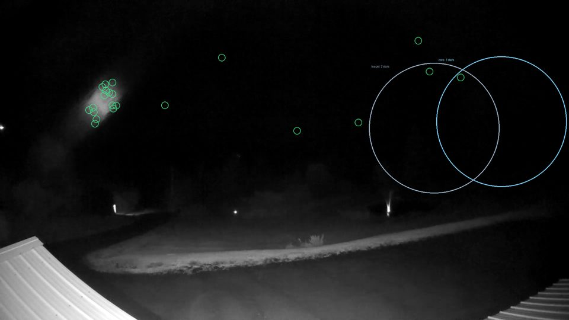
Thu 13 Aug · 00:00 core 1 stars · flux 546 · peak 9× · alt 6.0°rho 0 stars · flux 0 · peak 0×teapot 2 stars · flux 86830 of 60 frames stacked · noise σ 1.05 · 22 sources in sky 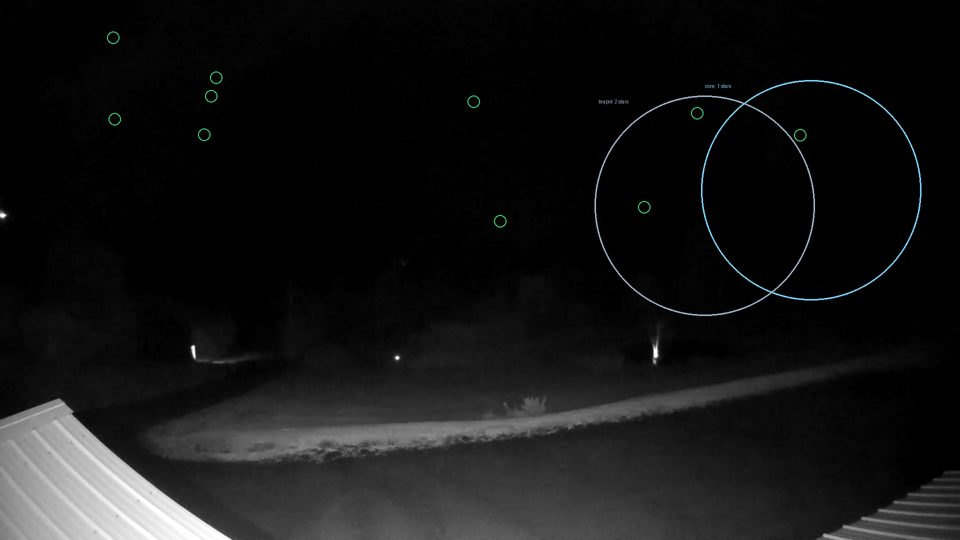
Wed 12 Aug · 23:45 core 1 stars · flux 1,862 · peak 8× · alt 7.5°rho 0 stars · flux 0 · peak 0×teapot 2 stars · flux 2,25230 of 60 frames stacked · noise σ 0.72 · 10 sources in sky 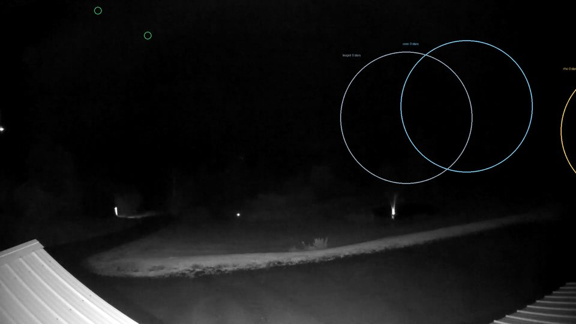
Wed 12 Aug · 23:30 core 0 stars · flux 2,725 · peak 6× · alt 9.0°rho 0 stars · flux 0 · peak 0×teapot 0 stars · flux 1,42230 of 60 frames stacked · noise σ 0.82 · 2 sources in sky 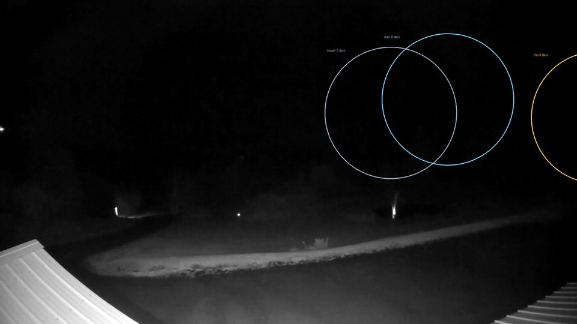
Wed 12 Aug · 23:15 core 0 stars · flux 4,809 · peak 6× · alt 10.3°rho 0 stars · flux 0 · peak 2×teapot 0 stars · flux 5,91430 of 60 frames stacked · noise σ 0.86 · 0 sources in sky 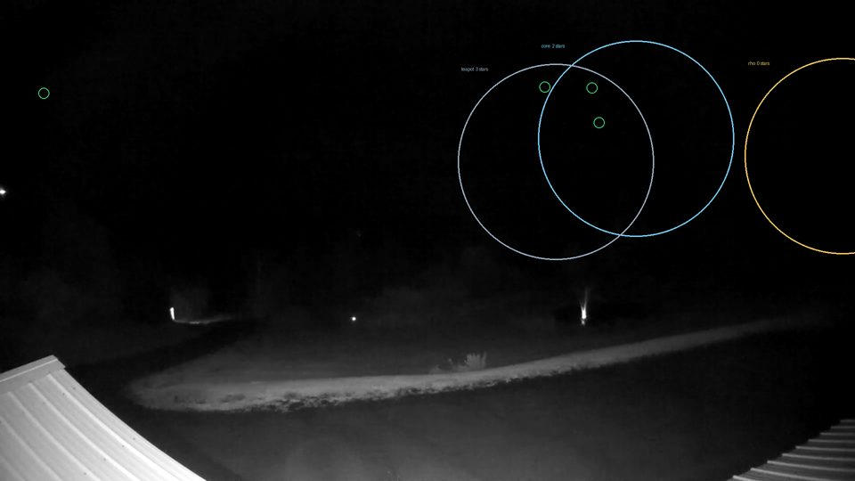
Wed 12 Aug · 23:00 core 2 stars · flux 4,424 · peak 19× · alt 11.5°rho 0 stars · flux 84 · peak 5×teapot 3 stars · flux 6,01530 of 60 frames stacked · noise σ 0.75 · 4 sources in sky 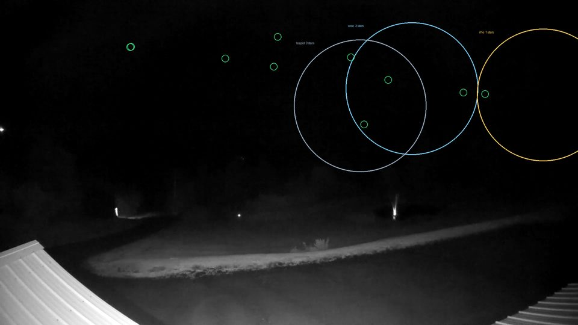
Wed 12 Aug · 22:45 core 3 stars · flux 5,651 · peak 21× · alt 12.5°rho 1 stars · flux 1,533 · peak 9×teapot 3 stars · flux 5,27830 of 60 frames stacked · noise σ 0.78 · 10 sources in sky 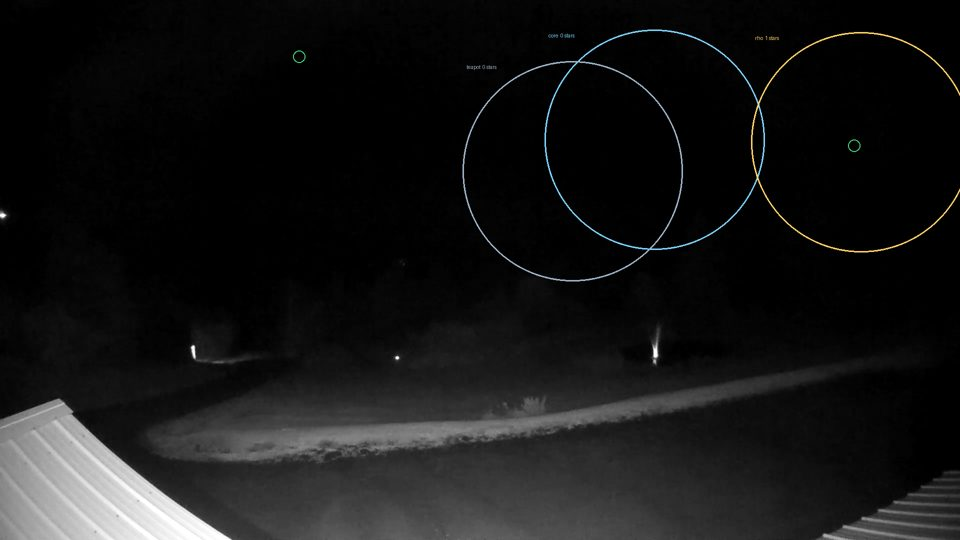
Wed 12 Aug · 22:30 core 0 stars · flux 3,916 · peak 8× · alt 13.5°rho 1 stars · flux 1,985 · peak 8×teapot 0 stars · flux 4,84630 of 60 frames stacked · noise σ 0.76 · 2 sources in sky 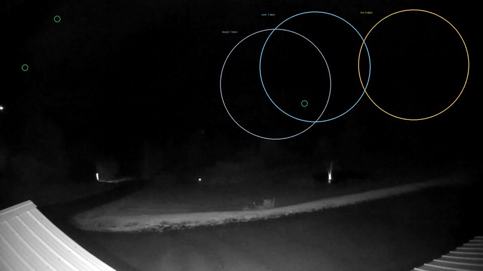
Wed 12 Aug · 22:15 core 1 stars · flux 4,382 · peak 9× · alt 14.2°rho 0 stars · flux 571 · peak 6×teapot 1 stars · flux 4,18530 of 60 frames stacked · noise σ 0.77 · 3 sources in sky 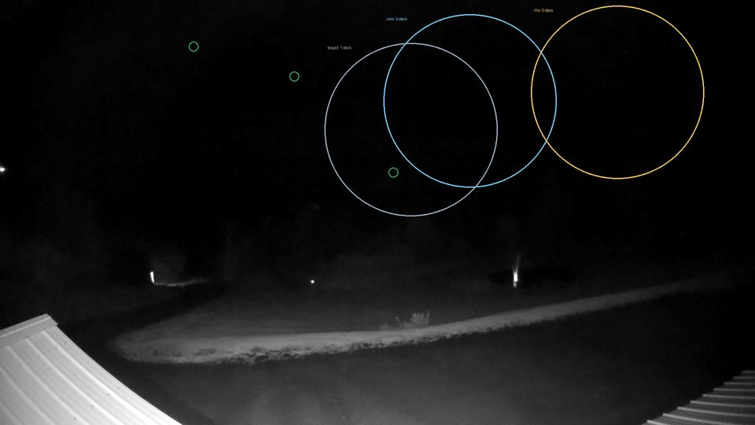
Wed 12 Aug · 22:00 core 0 stars · flux 6,911 · peak 8× · alt 14.9°rho 0 stars · flux 2,334 · peak 7×teapot 1 stars · flux 4,41930 of 60 frames stacked · noise σ 0.82 · 3 sources in sky 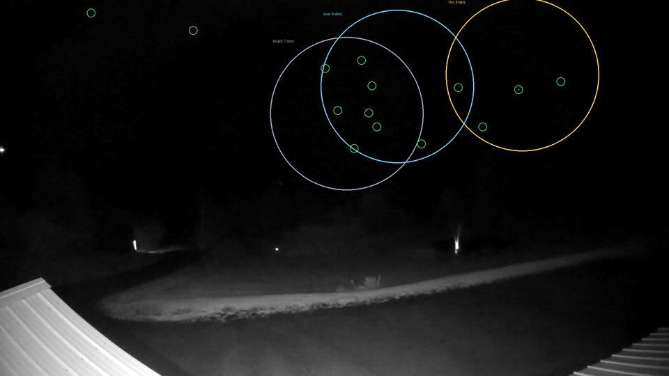
Wed 12 Aug · 21:45 core 9 stars · flux 4,195 · peak 20× · alt 15.4°rho 4 stars · flux 5,877 · peak 243×teapot 7 stars · flux 1,88530 of 60 frames stacked · noise σ 0.8 · 14 sources in sky 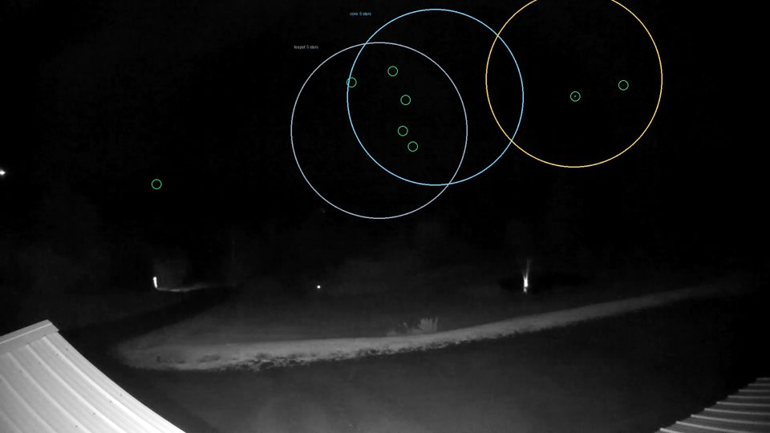
Wed 12 Aug · 21:30 core 5 stars · flux 2,249 · peak 21× · alt 15.7°rho 2 stars · flux 6,407 · peak 178×teapot 5 stars · flux 1,74630 of 60 frames stacked · noise σ 0.89 · 8 sources in sky 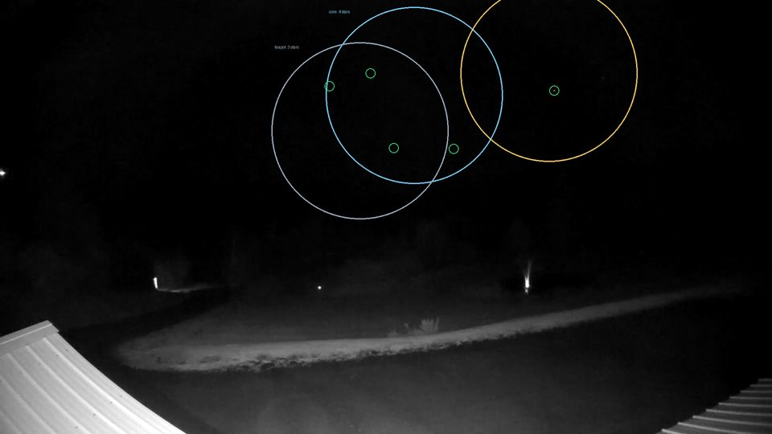
Wed 12 Aug · 21:15 core 4 stars · flux 1,579 · peak 14× · alt 15.9°rho 1 stars · flux 2,988 · peak 167×teapot 3 stars · flux 1,21930 of 60 frames stacked · noise σ 0.93 · 5 sources in sky 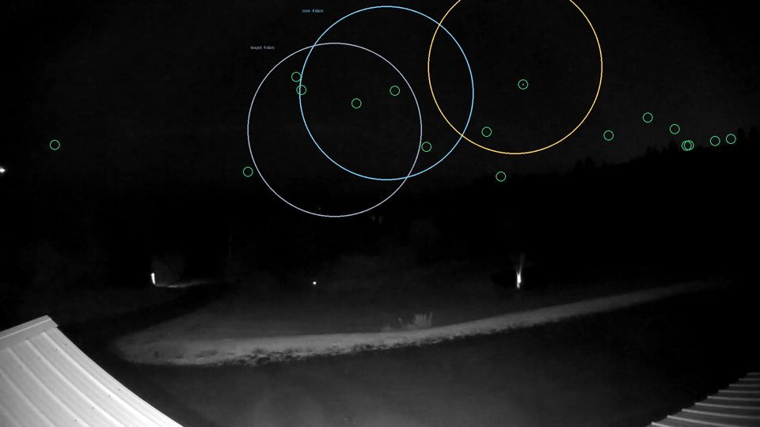
Wed 12 Aug · 21:00 core 4 stars · flux 3,315 · peak 17× · alt 15.9°rho 2 stars · flux 3,352 · peak 168×teapot 4 stars · flux 2,63430 of 60 frames stacked · noise σ 0.86 · 17 sources in sky 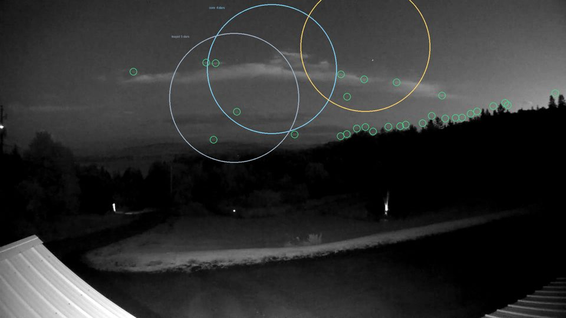
Wed 12 Aug · 20:45 core 4 stars · flux 75,778 · peak 16× · alt 15.7°rho 7 stars · flux 46,046 · peak 16×teapot 5 stars · flux 38,57130 of 60 frames stacked · noise σ 1.49 · 40 sources in sky 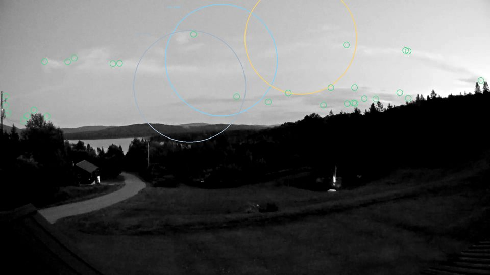
Wed 12 Aug · 20:30 core 4 stars · flux 17,541 · peak 8× · alt 15.4°rho 3 stars · flux 10,396 · peak 10×teapot 4 stars · flux 38,13430 of 60 frames stacked · noise σ 1.0 · 40 sources in sky 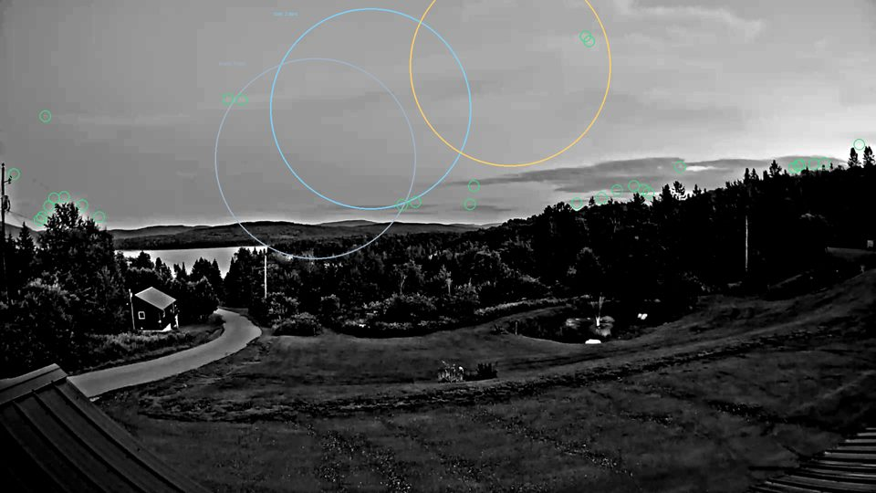
Wed 12 Aug · 20:15 core 2 stars · flux 6,955 · peak 8× · alt 14.9°rho 2 stars · flux 4,613 · peak 12×teapot 4 stars · flux 25,61430 of 60 frames stacked · noise σ 0.58 · 40 sources in sky 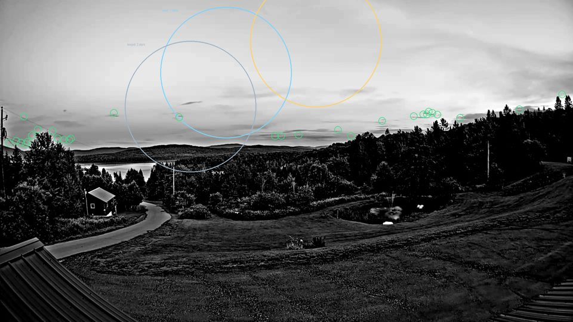
Wed 12 Aug · 20:00 core 1 stars · flux 43,380 · peak 17× · alt 14.3°rho 0 stars · flux 10,293 · peak 10×teapot 2 stars · flux 52,59730 of 60 frames stacked · noise σ 0.85 · 40 sources in sky frame not kept
Wed 12 Aug · 00:45 core 0 stars · flux 412 · peak 15× · alt 1.2°rho 0 stars · flux 0 · peak 0×teapot 0 stars · flux 1,41630 of 60 frames stacked · noise σ 0.83 · 4 sources in sky frame not kept
Wed 12 Aug · 00:30 core 0 stars · flux 993 · peak 10× · alt 3.0°rho 0 stars · flux 0 · peak 0×teapot 1 stars · flux 1,68430 of 60 frames stacked · noise σ 0.81 · 6 sources in sky frame not kept
Wed 12 Aug · 00:15 core 0 stars · flux 840 · peak 5× · alt 4.8°rho 0 stars · flux 0 · peak 0×teapot 1 stars · flux 1,75630 of 60 frames stacked · noise σ 0.82 · 3 sources in sky frame not kept
Wed 12 Aug · 00:00 core 0 stars · flux 1,238 · peak 5× · alt 6.4°rho 0 stars · flux 0 · peak 0×teapot 1 stars · flux 2,46630 of 60 frames stacked · noise σ 0.82 · 4 sources in sky frame not kept
Tue 11 Aug · 23:45 core 0 stars · flux 2,717 · peak 7× · alt 7.9°rho 0 stars · flux 0 · peak 0×teapot 1 stars · flux 3,75630 of 60 frames stacked · noise σ 0.78 · 6 sources in sky frame not kept
Tue 11 Aug · 23:30 core 0 stars · flux 2,652 · peak 7× · alt 9.3°rho 0 stars · flux 14 · peak 8×teapot 0 stars · flux 4,87330 of 60 frames stacked · noise σ 0.83 · 3 sources in sky frame not kept
Tue 11 Aug · 23:15 core 2 stars · flux 3,406 · peak 19× · alt 10.6°rho 0 stars · flux 168 · peak 6×teapot 4 stars · flux 4,21330 of 60 frames stacked · noise σ 0.87 · 5 sources in sky frame not kept
Tue 11 Aug · 23:00 core 2 stars · flux 2,985 · peak 27× · alt 11.8°rho 0 stars · flux 1,178 · peak 10×teapot 3 stars · flux 2,97130 of 60 frames stacked · noise σ 0.89 · 5 sources in sky frame not kept
Tue 11 Aug · 21:45 core 3 stars · flux 1,806 · peak 16× · alt 15.5°rho 1 stars · flux 5,153 · peak 10×teapot 3 stars · flux 1,26230 of 60 frames stacked · noise σ 0.92 · 6 sources in sky frame not kept
Tue 11 Aug · 21:30 core 4 stars · flux 1,625 · peak 24× · alt 15.7°rho 3 stars · flux 4,288 · peak 162×teapot 5 stars · flux 1,84930 of 60 frames stacked · noise σ 0.91 · 9 sources in sky frame not kept
Tue 11 Aug · 21:15 core 5 stars · flux 3,023 · peak 38× · alt 15.9°rho 2 stars · flux 3,101 · peak 184×teapot 4 stars · flux 3,06530 of 60 frames stacked · noise σ 0.83 · 7 sources in sky frame not kept
Tue 11 Aug · 21:00 core 4 stars · flux 2,783 · peak 24× · alt 15.8°rho 4 stars · flux 2,319 · peak 80×teapot 4 stars · flux 2,58430 of 60 frames stacked · noise σ 0.86 · 14 sources in sky frame not kept
Tue 11 Aug · 20:45 core 0 stars · flux 728 · peak 5× · alt 15.6°rho 0 stars · flux 530 · peak 5×teapot 1 stars · flux 3,57030 of 60 frames stacked · noise σ 1.39 · 40 sources in sky frame not kept
Tue 11 Aug · 20:30 core 8 stars · flux 22,725 · peak 20× · alt 15.3°rho 0 stars · flux 1,277 · peak 7×teapot 12 stars · flux 58,06830 of 60 frames stacked · noise σ 0.59 · 24 sources in sky frame not kept
Tue 11 Aug · 20:15 core 5 stars · flux 39,490 · peak 86× · alt 14.8°rho 0 stars · flux 1,773 · peak 6×teapot 7 stars · flux 59,42030 of 60 frames stacked · noise σ 0.46 · 37 sources in sky frame not kept
Tue 11 Aug · 20:00 core 1 stars · flux 204,594 · peak 60× · alt 14.2°rho 0 stars · flux 23,373 · peak 49×teapot 1 stars · flux 194,20330 of 60 frames stacked · noise σ 0.77 · 40 sources in sky frame not kept
Tue 11 Aug · 00:45 core 0 stars · flux 376 · peak 12× · alt 1.7°rho 0 stars · flux 0 · peak 0×teapot 0 stars · flux 97130 of 60 frames stacked · noise σ 0.91 · 3 sources in sky frame not kept
Tue 11 Aug · 00:30 core 0 stars · flux 268 · peak 6× · alt 3.5°rho 0 stars · flux 0 · peak 0×teapot 0 stars · flux 95130 of 60 frames stacked · noise σ 0.78 · 9 sources in sky frame not kept
Tue 11 Aug · 00:15 core 0 stars · flux 1,356 · peak 6× · alt 5.2°rho 0 stars · flux 0 · peak 0×teapot 0 stars · flux 2,10230 of 60 frames stacked · noise σ 0.93 · 3 sources in sky Every reading
Captured every 15 minutes through the dark hours.
Calibrated on the night of 4 Aug 2026 — the only fully dark night before the trip.